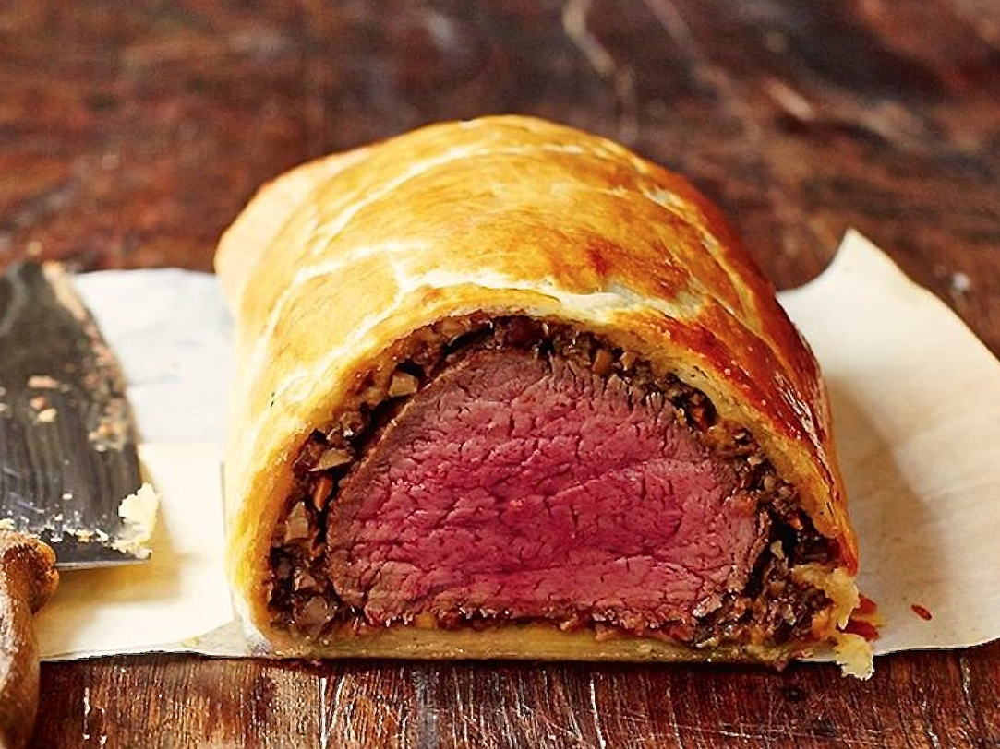

0.5 cup diced white mushrooms
1 tablespoon virgin olive oil
3 large sprig fresh rosemary
1 tablespoon dijon mustard
0.25 cup white wine
s + p to taste
Death of a Bachelor
Panic! at the Disco

is New York City
the heart of America?
it certainly is Haiku by Robert Heemstra
Sear the two filets very briefly on each side on stainless steal pan over high with vegetable oil.
Turn the heat down to medium. Add the mushrooms, onion, rosemary, and garlic to the pan, sprinkle with s + p. Cook until mushrooms and onion are slightly crisped.
Roll out one puff pastry piece and cut in half, so you have two rectangular strips of dough.
Brush steaks with the Dijon mustard on both sides.
scoop small amount of the mushroom mixture to the middle of one piece of the puff pastry. Place 1 steak, then add another scoop of the mixture. Repeat for other steak.
Fold edge of the pastry over the steak, tucking in and tightly sealing all the edges.
Preheat the oven to 425 degrees F. While preheating, put the wrapped beef in the freezer.
Spray pan with oil. Place steaks on pan and wash with egg.
Bake for 25 minutes, until pastry is golden brown.